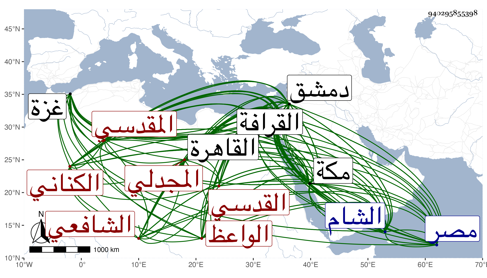

0902Sakhawi.DawLamic.ITO20230111-ara1.EIS1600.940295855398
Biography ID: 940295855398
أحمد بن عبد الله بن محمد بن داود بن عمرو بن علي بن عبد الدائم الشهاب أبو العباس الكناني الأصل المجدلي المقدسي الشافعي الواعظ ويعرف بأبي العباس القدسي . ولد كما أخبرني به في سنة تسع وثمانمائة وكذا نقله غيري عنه وأنه في أوائلها وزعم البقاعي أنه أخبره بأنه في حدود سنة خمس عشرة فالله أعلم بالمجدل ونشأ به فقرأ القرآن عند بلديه عبد الله بن خلد وصلى به وتلاه تجويدا على الشمس محمد بن موسى المعروف بابن أبي بيض والجمال محمود بن حنون القاضي المجدليين ، وحفظ المنهاج وجمع الجوامع وألفية ابن مالك وتصريف العزي والجمل للخونجي في المنطق والياسمينية في الجبر والمقابلة والنخبة لشيخنا وغيرها ، وعرض على جماعة وأول ما انتقل من بلده إلى غزة ثم إلى الرملة ثم إلى بيت المقدس ثم إلى الشام ثم إلى القاهرة ومكة وجاور بها في سنة أربع وأربعين ولزم الاشتغال في كل منها بالفقه والأصلين والعربية والفرائض والحساب والعروض وأول ما تخرج بالشهاب أحمد بن عامر المعروف بكتانة وابن أبي بيض المذكور والبرهان إبراهيم بن رمضان البصير ، ولقي بدمشق العلاء البخاري وسمع كلامه وجلس بحلقته وراءها ، وجل انتفاعه في الفنون بأبي القسم النويري ومن ذلك العربية وكذا أخذها عن العلاء القابوني وناصر الدين الإياسي الحنفي وأخذ عن رسلان ولازمه في الفقه وأصوله والنحو واللغة والحديث وهو الآمر له بالوعظ والفقه عن ماهر والعز القدسي والتقيين ابن قاضي شهبة والحريري والشهاب بن المحمرة والعلم البلقيني والشرف السبكي والجمال الأمشاطي وعليه قرأ العروض أيضا والقاياتي والونائي وعظمت ملازمته لهما في الفقه والعربية والأصلين وغيرها والشمس المالكي نسبا الشافعي مذهبا وعنه أخذ الياسمينية وكثيرا من بهجة الحاوي في آخرين منهم القاضي شمس الدين الأعسر وولي الله الشهاب بن عايد والشمس القباقبي وعليه سمع بعض مصنفه في القراآت الأربعة عشر والعبادي وأبي الأسباط الرملي والشمس المكيني ، وبعضهم في الأخذ أكثر من بعض ، وممن أخذ عنه الأصل وغيره من الفنون والعماد بن شرف والحديث التاج بن الغرابيلي وشيخنا أكثر من ملازمته وحضور مجالسه في الإملاء وغيره ، وكذا سمع الحديث على الزين بن عياش بمكة بل وتلا عليه لأبي عمرو ، وأبي الفتح المراغي والمحب بن نصر الله البغدادي والبساطي والزين الزركشي والقبابي والتدمري والعز القدسي والسعد بن الديري وعائشة الحنبلية في آخرين حتى أنه أخذ عن غالب مشايخ العصر في مصر والشام ومكة وغيرها وتردد لمن دب ودرج ، وأجاز له العز بن الفرات وجماعة ولقي بمكة أيضا الشيخ محمد الكيلاني المقري ، وجد في التحصيل حتى برع وأذن له في التدريس والإفتاء القاياتي والونائي وابن قاضي شهبة والبلقيني والعبادي وآخرون ورأيت إذن القاياتي له بالإقراء ووصفه بالمولى الإمام الفاضل الكامل سلالة الأماثل ونجل الأفاضل الشيخ العلامة وأنه قرأ عليه الربع الأول من الحاوي وكذا من الوصايا إلى النكاح ومن العدد إلى آخره ومن المنهاج من البيع قطعة وافرة متوالية وبقراءة غيره من كل من باقي أرباعه كأنه في التقسيم وبقراءته الكثير من جمع الجوامع كل ذلك بحثا وتحقيقا ونظرا ، وولي الإعادة بالصلاحية ببيت المقدس والتصدير في المسجد الأقصى وتصدى لنفع الطلبة ، وناب بأخرة عن العلم البلقيني وجلس ببعض الحوانيت بعناية الولوي البلقيني فإنه كان ممن اختص به وقتا وراج أمره عليه ولكن ما تحصل في القضاء على طائل ، وعقد مجلس الوعظ قديما من سنة ست وثلاثين وساد فيه وتمول منه جدا وتخطى الناس فيه لكونه غاية في الذكاء وسرعة الحفظ بحيث سمعته يحكي أنه حفظ نحو خمسين سطرا من صحاح الجوهري بحضرة السفطي من مرتين أو ثلاثة مستحضرا لكثير من التفسير والحديث والفقه وأصوله والعربية حافظا لجمل مستكثرا من الأشعار القديمة وغيرها وكذا الحكايات والنوادر في ذلك كله ومجالسه في الوعظ نهاية ولو تحرى الصدق لكان نسيج وحده في معناه إلا أنه ينسب إلى مجازفة في القول والفعل بحيث يحصل التوقف في أكثر ما يبديه مع دهاء وملق وقدرة على استجلاب الخواطر وإلفات الناس إلى جانبه مع أنه ليس عليه رونق العلماء ولا أئمة الوعاظ ، وقد ترجمه الشهاب بن أبي عذيبة فبالغ ووصفه بشيخنا الشيخ الإمام العلامة الواعظ المفتي المدرس معيد الصلاحية وإمام أهل الوعظ بلا منازع من مدة متطاولة وكتب عليها البرهان الأنصاري والشهاب العميري وغيرهما من أهل بيت المقدس إن الأمر فوق ما ذكر بل كان العز القدسي يبالغ في إطرائه ويقول أنه لم يصعد كرسي الوعظ بعد الزين القرشي مثله ، قال ابن أبي عذيبة ومع ذلك فلم ينصفه لأنه أحفظ من الزين بكثير قال ولقد قال العز أيضا أنه أحفظ من ابن تيمية مع ما انضم إليه من معرفة الحديث وتمييز صحيحه من ضعيفه إلى غير ذلك من فنونه وقيل إن البلاطنسي كان كثير المحبة والثناء عليه وكذا غالب أهل دمشق حتى أنه عرض عليه قضاء بعض بلادها فامتنع ، وأما شيخنا فإنه أورد له حادثة في تاريخه مؤذنة بإجلاله وقال أنه اشتغل كثيرا بالقدس وفيه فرط ذكاء وتعانى الكلام على العامة فمهر في ذلك واجتمع عليه خلق كثير ونقل عن أبي البقاء بن الضياء الحنفي المكي أنه من الفضلاء الأذكياء انتفع به الناس واشتغل عليه الطلبة وكتب على الفتوي ووعظ بالمسجد فاجتمع عليه العوام وبعض الخواص انتهى . وإلى هذه الكائنة أو غيرها أشار ابن أبي عذيبة فقال وجرت له محنة بسبب الوعظ افتراء عليه فنصره الله بقيام أهل الحق معه . قلت بل جرت له حوادث وخطوب أشنعها كائنته مع عشيره وصديقه البقاعي التي أوردتها في سيرته المفردة ومحصلها حكاية التفاعل من الجانبين والمقاهرة بأخذ مال كثير كان مودعا لصاحب الترجمة عند الآخر فجحده إياه واتفقت قضايا قبيحة من الطرفين أنزه قلمي عن المرور عليها وآل الأمر إلى وزن البقاعي بعد ما رغب عن شيء من وظائفه ليمنع عنه ظن صدقه في دعواه أكثر المال المدعى به وأشهد كل منهما على نفسه بالبراءة من المال والعرض وصار كل منهما بهذه الحادثة مثلة لكن صار البقاعي يسلى نفسه بقوله أما المال فلا يظن بي أخذه وأما التفاعل فأكبر ما فيه أن يقال رام شخص فعلا ففعل فيه مثله وأقبح ، وبواسطة هذه الحكاية أكثر من التردد للدوادار الكبير يشبك الفقيه والزيني كاتب السر وعقد مجلس الوعظ عند كل منهما واغتبطا به وما نهض الغريم إلى بلوغ أربه والله أعلم بحقيقة أمرهما والجنسية علة الضم ، هذا وقد كتب البقاعي عنه جوابه عن لغز ابن الوردي بل كتب عنه من نظم ولده وشيخه ابن رسلان والمحب بن الشحنة وغيرهم واعتمده في أشياء أثبتها ووضع ترجمته في شيوخه وآل أمره إلى أن تعلل من يده من وقعة في الحمام كسرت منها رجله فيما قيل ثم مات في ليلة الأربعاء سادس عشري جمادى الثانية سنة سبعين ودفن من الغد بالقرافة الصغرى في تربة يشبك الدوادار وتجاذب كل من إبراهيم الجبرتي وسميه البقاعي الدعوي بأن موته من كرامته لسبق خصومة قريبة بينه وبين الجبرتي أيضا وقد لقيت أبا العباس كثيرا وكان يكثر المجيء إلي خصوصا بعد كائنته المشار إليها وقرأ علي بمجلس العلاء الصابوني ديباجة بعض تصانيفه واستجازني بروايته مع سائر ما صنفته ورويته ولما اجتزت بالمجدل اجتمع بي وأوقفني على شرح كتبه على منظومة لأبي الفتح السبكي في تعداد الخلفاء وذيلها الشهاب بن أبي عذيبة وهو في نحو عشرة كراريس وأنشدني أشعارا زعم أنها نظمه وليس بمدفوع عن كل هذا والله أعلم ومن ذلك ما ذكر أنه جوابه عن لغز ابن الوردي وهو :
| عندي سؤال حسن مستظرف | فرع على أصلين قد تفرعا |
| قابض شيء برضا مالكه | ويضمن القيمة والمثل معا |
فقال :
| خذ الجواب نظم در مبدعا | بالحسن هذا محسن تبرعا |
| أعار صيدا من حلال ثم إذ | احرم ذا أتلفه فاجتمعا |
ومما أنشده ملغزا في حر وكتبه عنه ابن أبي عذيبة أبيات تزيد على عشرين أولها :
| سألتك يا خير الأنام بأسرهم | عن اسم ثلاثي بنظم مسطر |
| عليه مدار النصف من دين أحمد | عليه صلاة الله والآل تعطر |
